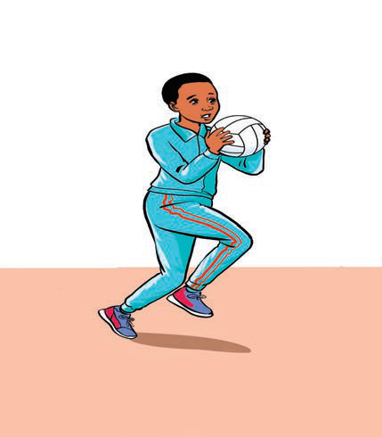
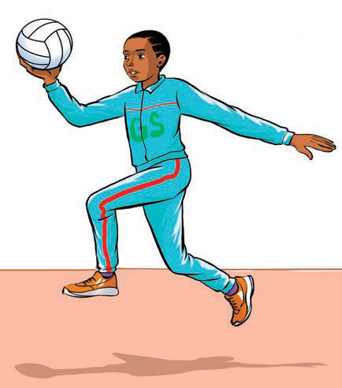

(b) Movements
Movement is an important skill in netball, where players must use their feet carefully to maintain direction and balance. In netball, a player cannot run with the ball, but they can take one or two running steps to change direction and prepare to pass or shoot. Figure 14 shows how to change movements.